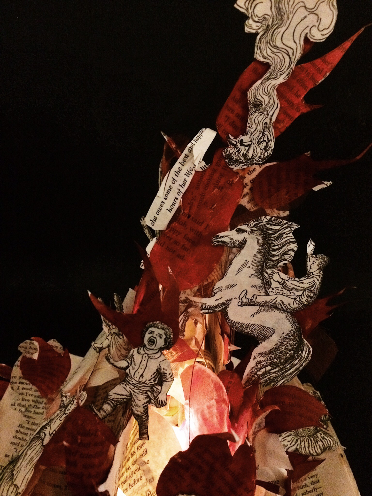
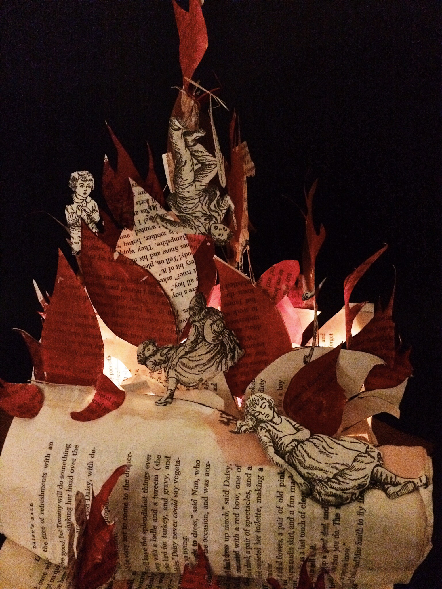
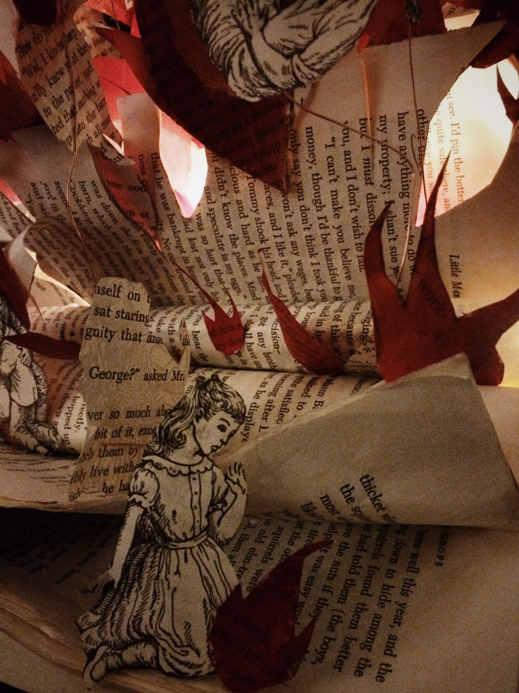
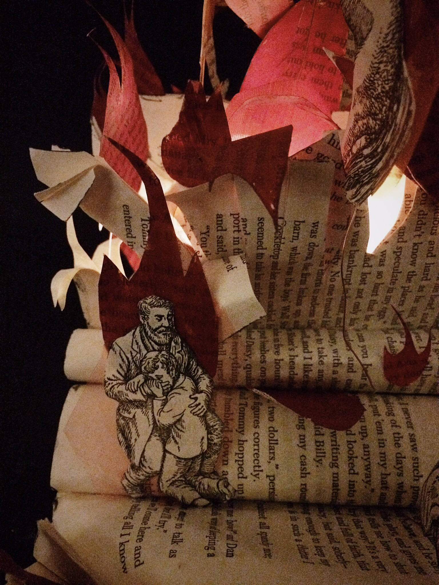
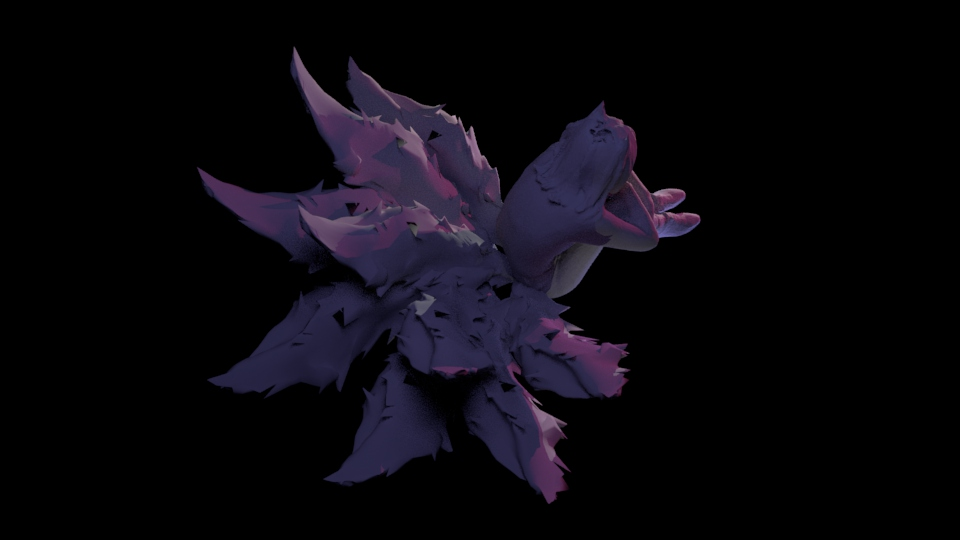
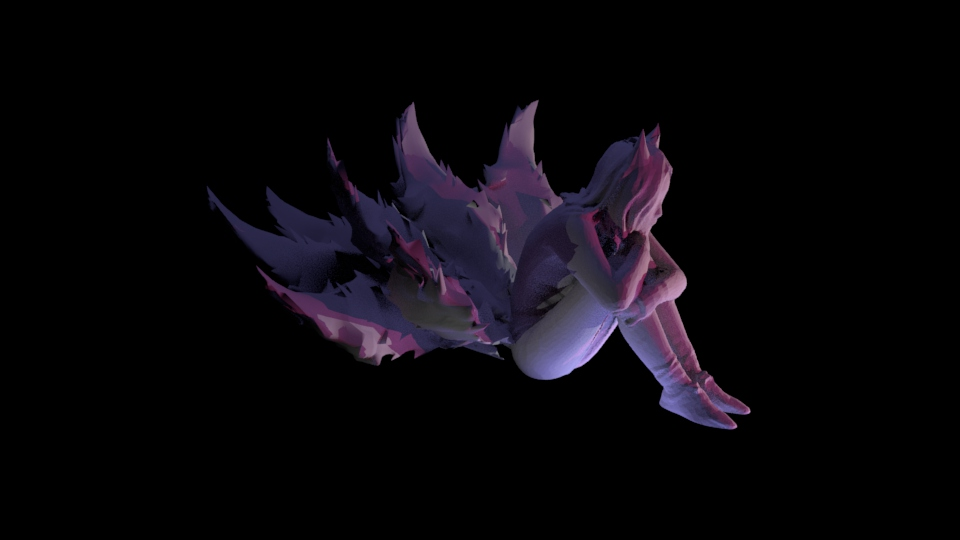
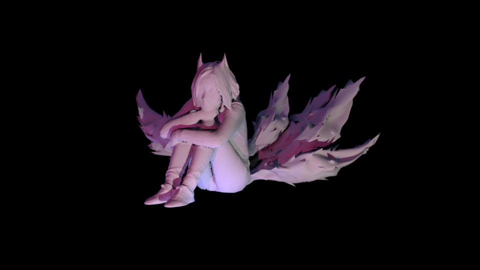
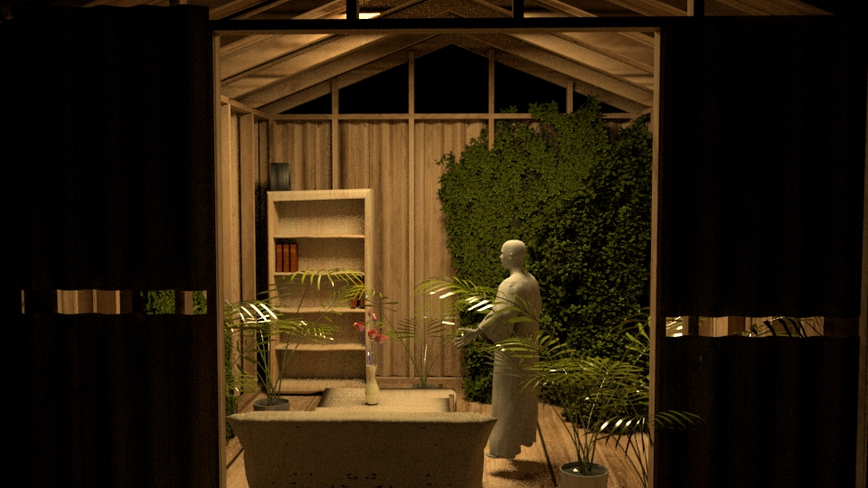
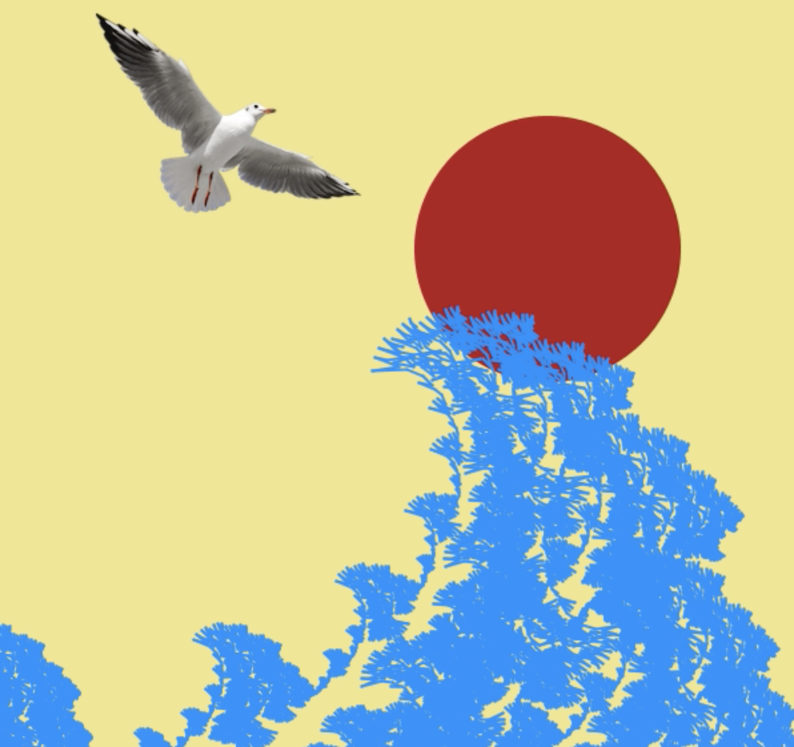
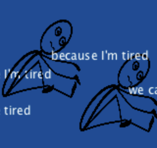

1. "I Know a Hundred Ways to Die"
This is the first video I created through Premiere. Many people I knew were suffering from anxiety, myself included. I invited some of them to show their anxious faces /movement in front of the camera, so I could portray anxiety in a non-abstract way. I also combined one of my favorite poetry “I Know a Hundred Ways to Die” by Edna St. Vincent Millay, to portray myself and what’s happening in my mind whenever I endured anxiety.
2. "Losing Control"
This is the second video I made through Premiere. During that time, a terrible thing happened in my country. Some kindergarten-teachers sexually abused /tortured kids in a dark room. The teachers fed kids pills (which they lied to kids are “candies”) to make them physically numb. Kids are small (the youngest was 6) and they were threatened by their teachers, so none of them dared to tell their parents what happened. Until someday, one of the girls cried and screamed from seeing her dad’s taking a shower (male’s naked body), her parents immediately felt something went wrong. After the truth exposed, the teachers who have abused kids have not got their punishments, the president of the kindergarten refused to talk about it, and the government tried to cover the news as much as they could. I truly feel shameful for them and think my country is a place where people lose control. In this video, white rose symbolize pure kids, red nails symbolize lust, the mask symbolize the fake and imply the evil behind it. I haven’t watched the video again after I created it, it’s heartbreaking for me.
3. "Small Obsession"
People consider men who are sentimental are gays. But the fact is: every man has something soft, vulnerable, romantic deep inside their heart. Many of them are straight. But because men are restricted by the society as they suppose to have strength and not to show their emotion too much, many of them don’t like to express their sentiments. I do believe the burden on men nowadays are much more heavier than on women. I did this video to show that every man is a soft creature; If you are a man, it’s ok to show your vulnerability and sentiment.

4. "Broken Renaissance"
This is my first glitch art. I first created the background scene through Photoshop, then created the low poly ‘David’ (on the background) through Illustrator, and combined them together. The objects that are being poured from a bucket: Phones, laptops, cigarettes, headphones, marijuanas, sleeping pills…… these objects symbolized the youth, the teenagers, and the young generation. We are talented but meanwhile overwhelmed by the amusement around us; sometimes we live for instant gratification, but most of time we live with confusion and wonder who we are. My generation is numbed and controlled deeply by the amusement around us, we don’t know how to get rid of them. We are what I call a “broken renaissance”.


 
 

5. "Little Men"
This is a sculpture I made in 2017. When I was looking around in a second-hand bookstore in San Jose, I was attracted by the amount of books on the bookshelf. If to randomly picked a book, the book would have a name that I never heard of. People came in, looked around, touched a few books, and left without purchasing any of them. Then I started thinking: do people still read paper books these days? Since Kindle, iPad and Computers are more easier to access to the content of the book, why should people touch a paper book at all in the future? The technology will only lead us forward, there’s no way to backward, we can’t go back in time—— plus producing paper-books massively harm the environment, I think eventually paper books will be replaced by e-book. Thinking about how many bookstores were closed in the past years, I felt sad. I felt sad for the book, not human. I couldn’t do anything at that moment but bought the book in my hand, which had a name “The Little Men” and turned it into a book sculpture. I cut out all the little figures from the book, made them looking painful running away/ swallowed by the fire. When we eventually don’t need paper-books anymore and no one care’s about their existence: that’s when they began fading.



6. "Nine Tails"
This is the first time I touched Maya. I had an opportunity to 3D scan my body — in any pose I desired. Then I imported it into Maya and modified it. There's something natural about the pose: It's the moment where I felt most relaxing. So I decided to express myself in a form that relate to my natural personality. I chose the 9-tails fox form. Even though 9-tails fox is a mythical figure, there's always something about it that attract me. I chose to combine human and animal forms together, because we have been human "being" for so long that we often forget we are actually animal too. We are spiritually separated, lonely, and wounded. I love how it turned out also looks like a flower (cactus?) blooming from the top view. It's more like a combination form of human, animal, and plants.

7. "Living Room"
This is a public art installation’s proposal I made for SF market street festival, I did it during the spring break. I used Maya to render this scene. Since living room is often considered a comfort zone or an amenity for most of us, I wanted to challenge the definition of “comfort zone” by installing a living room on the street where tons of people passing by everyday. The room will be in a green house form, where it grows many kinds of green plants inside and display light music. I want people to come in have a seat, read a book, drink a coffee and have a rest in the busy city.
8. "Spring"
I'm excited to explore the possibilities of animation in Maya. I love art history, so I chose a painting of Adam and Eve and hang it on the bathroom wall. I used apples from reality and relate them with the painting, because apple symbolize the attitude of exploring between Adam and Eve. The blue fabric means imagination / romance / femininity, implying the owner of the bathroom is a female (me!). I did everything intuitively from my imagination. Perhaps I made this scene because spring is coming.

9. "Wave!" (click the image to play)
Algorithm is tough but amazing. In order create the koch, I need to first locate 5 points on a horizontal line: the start point, end point, and middle point(which are easier to locate), as well as the point between start point and middle point, the point between the middle and the end point. After that, I'll be able to works things more properly next. The new created line will have another 5 pints, creating a "triangle" out of it, then base on the new created two lines, there will be another 5 points... In this sketch, I set the times of the kochline to 8 times (>8) using 'for' loop, then assigned a 'restart' class, where everything would be erased and go back to the beginning when the lines of koch have separate up to 8 times. In this sketch, I learned that to create such scene, 'Pvector', 'add', 'restart' 'return' and 'ArrayList' are incredibly important. I played them around to make a shape of the wave, also used 'PImage' and 'mouseMoved' as my function example. I encourage everyone to use algorithm in their sketch, include myself, because it makes your sketch looks more "logical". I believe algorithm is one of the most important thing in coding; Even though I don't like it now, I know I'll eventually do. Or I will get use to it. (Because the code contains strings/arrays, it's doesn't run properly on a webpage, so I upload a quick video here, please click the image to see).

10. "Limitation" (click the image to play)
Because the code contains strings/arrays, it's doesn't run properly on a webpage, so I upload a quick video here (click the image to see). In this sketch, I again played around with the 'Koch' code. I like how it turned out as a logical triangle. The ellipse within the triangle means the inspiration that I couldn't get out from my mind, or the limitation of my thinking. And the matchstick-men are many Me’s, who was sleepy in the library in order to finish my coding homework. Someday, I wish, I’ll be able to use algorithm to express my feeling more properly. (Because the code contains strings/arrays, it's doesn't run properly on a webpage, so I upload a quick video here, please click the image to see).